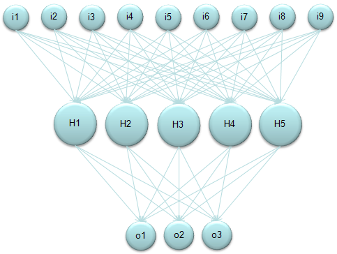
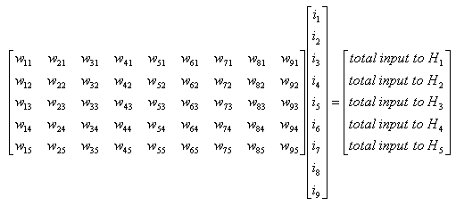
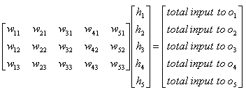

| Neural Network |
|
One of the most wildly used form of Neural Network would be illustrated as follows. Here in this diagram,
"i" stands for input layer "H" stands for hidden layer "o" stands for output layer
I am not going to explain what is meaning (role) of these components. Please try google "Neural Network Tutorial" or "Introduction to Neural Network" if you are new to this area.

But the basic calculation logic as as follow. i) Take a Node (a Circle, for example H1). ii) Take all the input value (each arrow) getting into it. iii) Take all the weight value which is associated with each of the input value. iv) Multiply each input value with its corresponding weight value and take the sum of all the multiplication (This is "Sum of Times" process). This become the total input value to the selected Node.
If you do this process for only a single Node (e.g, H1), you can represent it as simple "Sum of Times" form. But if you want to describe this process for all the Nodes at each layer (e.g, H1, H2, H3, H4, H5) it would be easier/clearer to represent it as a Matrix equation as follows. (Of course you can represent this into five separate "Sum of Times/Sum of Multiplication" form, but Matrix form would neat clearer).

With the same logic as described above, you can get the matrix equation to calculate the total input to the layer 'o (output)'.

|